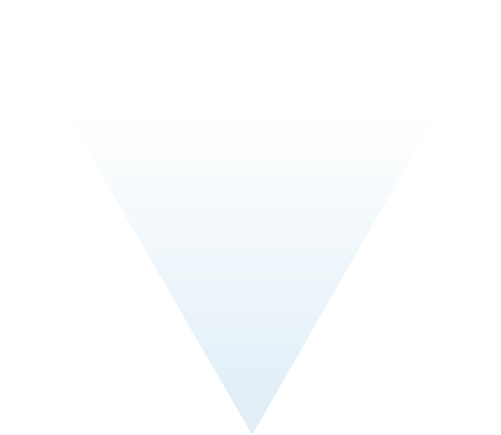

<div class="automotive-navigation-view" (click)="closeOtherDropDowns(8)">
    <!--  -->

    <div class="automotive-navigation-buttons">
        <div class="top-buttons">
            <button class="distributed-activities-button disabledSpan" [disabled]="disabledButtons[0].disabled" [matMenuTriggerFor]="distributedActivitiesMenu"
                #distributedActivities="matMenuTrigger"
                (mouseover)="openDistributedActivitiesMenu();" (mouseleave)="closeDistributedActivitiesMenu();" mat-button
                color="primary"><span style="transform:skewX(-30deg) !important; display: inline-block"> Distributed Activities </span></button>
                <mat-menu [hasBackdrop]="false" #distributedActivitiesMenu="matMenu" [overlapTrigger]="false" class="top-button-width distributed-activities-menu">
                    <span matMenuContent (mouseenter)="openDistributedActivitiesMenu();" (mouseleave)="closeDistributedActivitiesMenu();">
                        <button mat-menu-item class="disabledHover">CIA</button>
                    </span>
            </mat-menu>

            <button class="post-development-button disabledSpan" [disabled]="disabledButtons[1].disabled" [matMenuTriggerFor]="postDevelopmentMenu"
                #postDevelopment="matMenuTrigger" [ngClass]="postDevelopment.menuOpen ?'activeMenu':'' "
                (mouseover)="openPostDevelopmentMenu();" (mouseleave)="closePostDevelopmentMenu();" mat-button
                color="primary"> <span style="transform:skewX(30deg) !important; display: inline-block"> Post-Development </span></button>
            <mat-menu [hasBackdrop]="false" #postDevelopmentMenu="matMenu" [overlapTrigger]="false" class="top-button-width post-development-menu">
                <span matMenuContent (mouseenter)="openPostDevelopmentMenu();" (mouseleave)="closePostDevelopmentMenu();">
                    <button mat-menu-item class="disabledHover">Production control
                        plan</button>
                        <mat-divider></mat-divider>
                    <button mat-menu-item class="disabledHover">Incident response
                        plan</button>
                        <mat-divider></mat-divider>
                    <button mat-menu-item class="disabledHover">End of life</button>
                </span>
            </mat-menu>
        </div>

        <div class="column-buttons">
            <button [disabled]="disabledButtons[2].disabled" [matMenuTriggerFor]="conceptMenu" #concept="matMenuTrigger"
                [ngClass]="concept.menuOpen ?'activeMenu':'' " (mouseover)="openConceptMenu();"
                (mouseleave)="closeConceptMenu();" class="concept-button" mat-button color="primary">
                <div (mouseover)="openConceptMenu();" (mouseleave)="closeConceptMenu();" class="concept">
                    Concept
                </div>
            </button>
            <mat-menu [hasBackdrop]="false" #conceptMenu="matMenu" [overlapTrigger]="false" class="concept-menu">
                <span matMenuContent (mouseenter)="openConceptMenu();" (mouseleave)="closeConceptMenu();">
                    <button class="activeButton" (click)="navigateToRoute('/modeling')" mat-menu-item>Item
                        definition</button>
                        <mat-divider class="blue-matDivider"></mat-divider>
                    <button class="activeButton" [disabled]="!projectName" (click)="navigateToRoute('/threats')"
                        mat-menu-item>TARA</button>
                        <mat-divider class="blue-matDivider"></mat-divider>
                    <button class="activeButton" [disabled]="!projectName" (click)="navigateToRoute('/cybersecurity-goal')" mat-menu-item>Goals &
                        Claims</button>
                        <mat-divider class="blue-matDivider"></mat-divider>
                    <button mat-menu-item class="disabledHover">Verification report for
                        goals</button>
                        <mat-divider></mat-divider>
                    <button mat-menu-item class="disabledHover">Concept</button>
                    <mat-divider></mat-divider>
                    <button mat-menu-item class="disabledHover">Verification report for
                        concept</button>
                </span>
            </mat-menu>


            <button [disabled]="disabledButtons[3].disabled" [matMenuTriggerFor]="vvMenu" #vv="matMenuTrigger"
                [ngClass]="vv.menuOpen ?'activeMenu':'' " (mouseover)="openvvMenu();"
                (mouseleave)="closevvMenu();" class="vv-button disabledSpan" mat-button color="primary">
                <div class="vClass"
                    [ngStyle]="disabledButtons[3].disabled && {'cursor':'default'}">
                    V&V
                </div>
            </button>
            <mat-menu [hasBackdrop]="false" #vvMenu="matMenu" [overlapTrigger]="false" class="vv-menu">
                <span matMenuContent (mouseenter)="openvvMenu();" (mouseleave)="closevvMenu();">
                    <button mat-menu-item class="wrap-text disabledHover">Integration and
                        verification specification</button>
                        <mat-divider></mat-divider>
                    <button mat-menu-item class="disabledHover">Integration and
                        verification report</button>
                        <mat-divider></mat-divider>
                    <button mat-menu-item class="disabledHover">Validation
                        report</button>
                </span>
            </mat-menu>
        </div>
        <div class="side-buttons">
            <button class="disabledSpan" [disabled]="disabledButtons[6].disabled" [matMenuTriggerFor]="organizationalCybersecurityMenu" #organizationalCybersecurity="matMenuTrigger"
                [ngClass]="organizationalCybersecurity.menuOpen ?'activeMenu':'' " (mouseover)="openOrganizationalCybersecurityMenu();"
                (mouseleave)="closeOrganizationalCybersecurityMenu();" mat-raised-button color="primary"> <span style="transform:skew(-30deg)!important; display: inline-block;">Organizational
                Cybersecurity
                Management</span></button>
            <mat-menu focusFirstItem="false" [hasBackdrop]="false" #organizationalCybersecurityMenu="matMenu" class="cybersecurity-organization-menu">
                <span matMenuContent (mouseenter)="openOrganizationalCybersecurityMenu();" (mouseleave)="closeOrganizationalCybersecurityMenu()">
                    <button class="disabledHover" mat-menu-item>Policies, rules, and processes</button>
                    <mat-divider></mat-divider>
                    <button class="disabledHover" mat-menu-item >Competence Management</button>
                    <mat-divider></mat-divider>
                    <button class="disabledHover" mat-menu-item >Awareness Management</button>
                    <mat-divider></mat-divider>
                    <button class="disabledHover" mat-menu-item>Continious improvement</button>
                    <mat-divider></mat-divider>
                    <button class="disabledHover" mat-menu-item >Organization's management systems</button>
                    <mat-divider></mat-divider>
                    <button class="disabledHover" mat-menu-item >Tool management</button>
                    <mat-divider></mat-divider>
                    <button class="disabledHover" mat-menu-item >Audit report</button>
                </span>
            </mat-menu>
    
    
            <button class="disabledSpan" style="margin-left:2rem;" [disabled]="disabledButtons[7].disabled" [matMenuTriggerFor]="projectCybersecurityMenu" #projectCybersecurity="matMenuTrigger"
                [ngClass]="projectCybersecurity.menuOpen ?'activeMenu':'' " (mouseover)="openProjectCybersecurityMenu();"
                (mouseleave)="closeProjectCybersecurityMenu();" mat-raised-button color="primary"> <span style="transform:skew(-30deg)!important; display: inline-block;">Project
                Cybersecurity Management </span></button>
            <mat-menu [hasBackdrop]="false" #projectCybersecurityMenu="matMenu" [overlapTrigger]="false" class="cybersecurity-management-menu">
                <span matMenuContent (mouseenter)="openProjectCybersecurityMenu();" (mouseleave)="closeProjectCybersecurityMenu()">
                    <button mat-menu-item class="disabledHover">Cybersecurity Plan</button>
                    <mat-divider></mat-divider>
                    <button mat-menu-item class="disabledHover">Assessment Report</button>
                    <mat-divider></mat-divider>
                    <button mat-menu-item class="disabledHover">Release for post-development report</button>
                </span>
            </mat-menu>
        </div>


        <div class="development-button">
            
            <button color="primary" [disabled]="disabledButtons[4].disabled" [matMenuTriggerFor]="developmentMenu" #development="matMenuTrigger"
                [ngClass]="development.menuOpen ?'activeMenu':'' " (mouseover)="openDevelopmentMenu();"
                (mouseleave)="closeDevelopmentMenu();" mat-raised-button color="primary">
                <span style="transform:rotate(-180deg) !important; display: inline-block; padding-bottom:3rem;">Development</span>
            </button>
            <mat-menu [hasBackdrop]="false" #developmentMenu="matMenu" [overlapTrigger]="false" class="development-button-menu">
                <span matMenuContent (mouseenter)="openDevelopmentMenu();" (mouseleave)="closeDevelopmentMenu();">
                    <button mat-menu-item class="disabledHover">Specifications</button>
                    <mat-divider></mat-divider>
                    <button mat-menu-item class="disabledHover">Requirements for
                        post-development</button>
                        <mat-divider></mat-divider>
                    <button class="wrap-text disabledHover" mat-menu-item>Doc
                        for modeling, design, or programming languages, and coding
                        guidelines</button>
                        <mat-divider></mat-divider>
                    <button mat-menu-item class="disabledHover">Verification report for
                        specifications</button>
                        <mat-divider></mat-divider>
                    <button mat-menu-item class="activeButton" (click)="navigateToRoute('/weaknesses')">Weaknesses</button>
                </span>
            </mat-menu>
        </div>


        <div class="continual-cybersecurity-button">
            <button [disabled]="disabledButtons[5].disabled" [matMenuTriggerFor]="continualCybersecurityMenu" #continualCybersecurity="matMenuTrigger"
                [ngClass]="{'activeMenu arrowActive':continualCybersecurity.menuOpen}" (mouseover)="openContinualCybersecurityMenu();"
                (mouseleave)="closeContinualCybersecurityMenu();" class="arrow" mat-button color="primary">Continual Cybersecurity Activities</button>
        </div>

        <mat-menu [hasBackdrop]="false" #continualCybersecurityMenu="matMenu" [overlapTrigger]="false">
            <span matMenuContent (mouseenter)="openContinualCybersecurityMenu();" (mouseleave)="closeContinualCybersecurityMenu();">
                <button (mouseenter)="openContinualCybersecurityMenu();" mat-menu-item class="disabledHover">Sources for
                    information</button>
                    <mat-divider></mat-divider>
                <button (mouseenter)="openContinualCybersecurityMenu();" mat-menu-item class="disabledHover">Triggers</button>
                <mat-divider></mat-divider>
                <button (mouseenter)="openContinualCybersecurityMenu();" mat-menu-item class="disabledHover">Events</button>
                <mat-divider></mat-divider>
                <button (mouseenter)="openContinualCybersecurityMenu();" mat-menu-item class="activeButton" (click)="navigateToRoute('/weaknesses')">Weaknesses</button>
                <mat-divider></mat-divider>
                <button (mouseenter)="openContinualCybersecurityMenu();" mat-menu-item class="activeButton" (click)="navigateToRoute('/weaknesses')">Vulnerability
                    analysis</button>
                    <mat-divider></mat-divider>
                <button (mouseenter)="openContinualCybersecurityMenu();" mat-menu-item class="activeButton" [disabled]="!projectName"
                    (click)="navigateToRoute('/vulnerabilities')">Vulnerability management</button>
            </span>
        </mat-menu>
    </div>
</div>